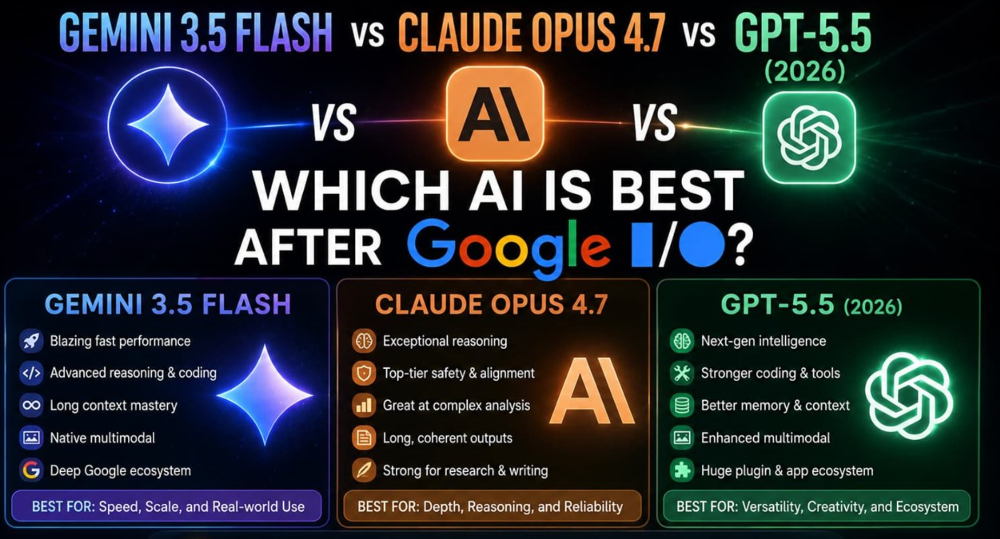
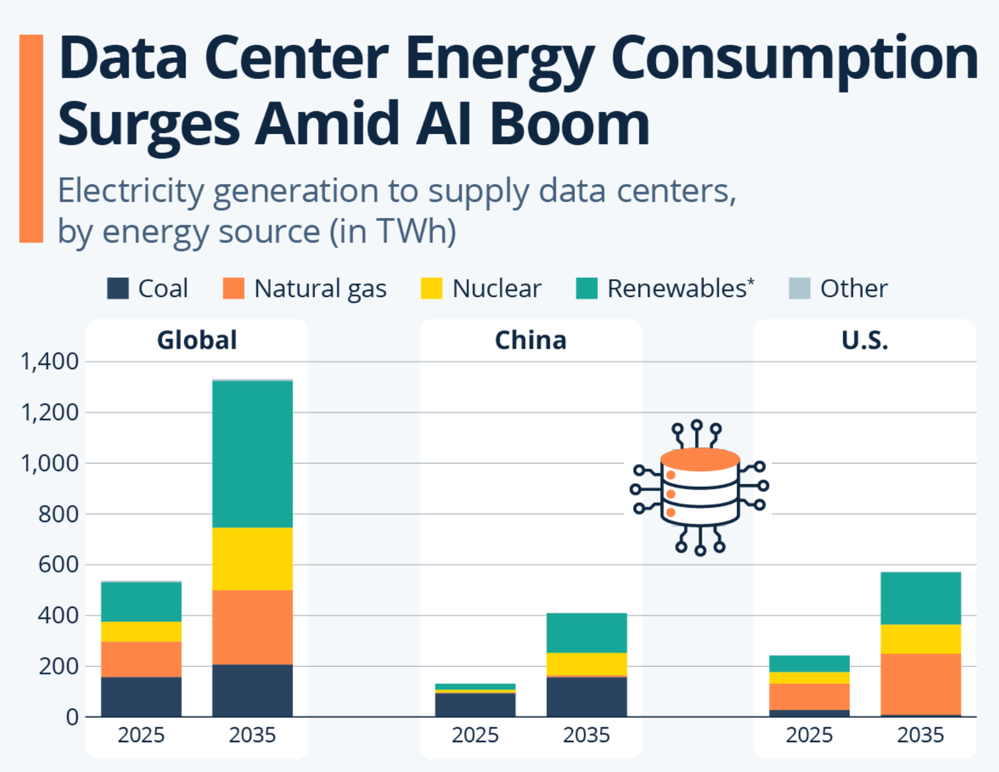
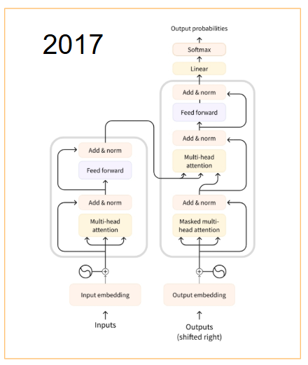
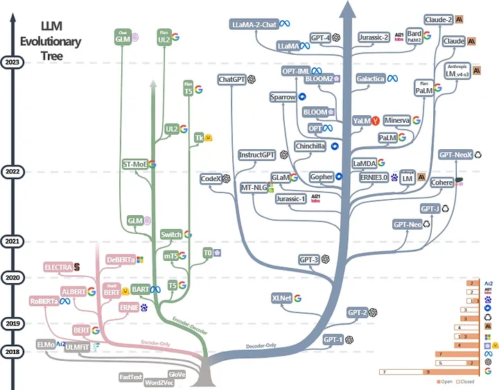
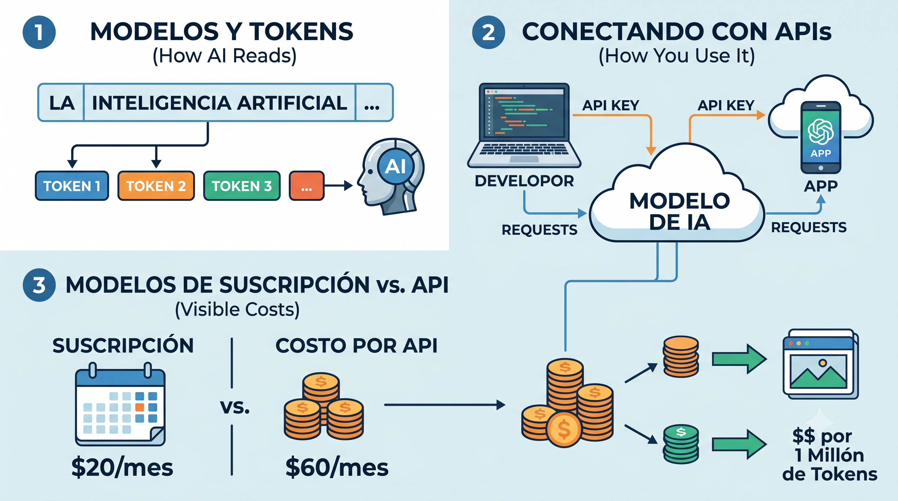
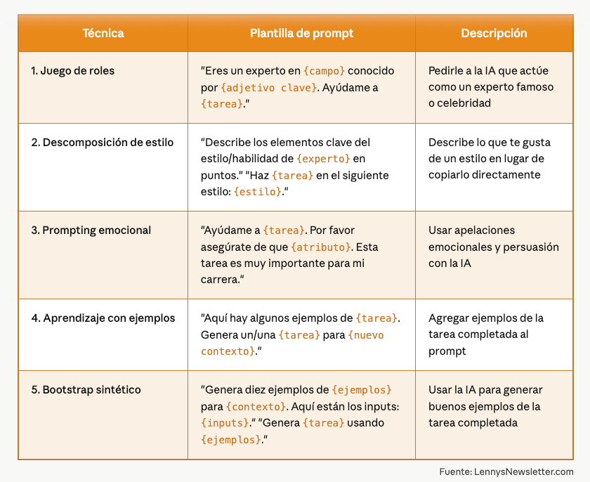
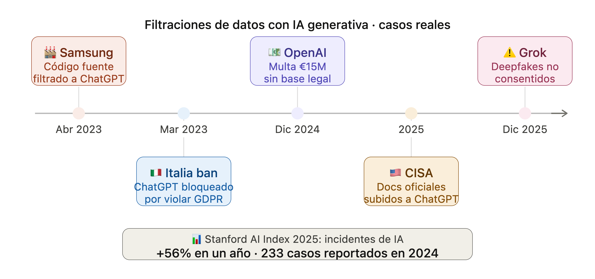

Toma de Decisiones Basadas en Datos e IA
Módulo 3 · Clase 3: Inteligencia Artificial Generativa
Dirección de Transformación Digital · UTFSM
junio 2026
Toma de Decisiones Basadas en Datos e IA
Módulo 3 · Clase 3: Inteligencia Artificial Generativa
LLMs · Prompts · Asistentes Virtuales · Ética · Uso Responsable
Diplomado Transformación Digital · DGEC UTFSM · 2026
Francisco Alfaro Medina
Universidad Técnica Federico Santa María
Dirección de Transformación Digital · 2026
Resumen del módulo y hoja de ruta de hoy
Esta clase cierra el módulo con la pieza más visible de la IA actual: los modelos de lenguaje y cómo usarlos con criterio.
IA en los medios …


La realidad …


La triste realidad …

Parte 1
¿Qué son los LLMs?
Spoiler: no razonan, predicen
Large Language Models
- Un LLM es una red neuronal entrenada con cantidades masivas de texto.
- Aprende distribuciones de probabilidad sobre secuencias de tokens.
- Su tarea fundamental: predecir el siguiente token más probable.
- No tiene un modelo del mundo. No tiene intenciones. No “entiende”.
- Todo lo que parece razonamiento es interpolación estadística muy sofisticada.
La frase más importante de esta charla
Un LLM no razona, predice. Todo lo demás se deriva de entender esto bien. Incluido su costo.
Historia de los LLM


De texto a tokens — la unidad económica de la IA
- Los modelos no procesan palabras, procesan tokens (fragmentos de texto).
- Un token ≈ 0.75 palabras en inglés. En español: menos eficiente (~0.6).
- La tokenización afecta directamente el costo, la velocidad y la precisión.
- Palabras técnicas, nombres propios o en otro idioma usan varios tokens.
- Cada token que envías y recibes se cobra. Sin excepciones.
Tokenizador interactivo
Diagrama de un LLM — animado


Sobre los costos …

Parte 2
Prompt Engineering aplicado a datos
No son trucos, son formas de comunicarse con precisión
¿Qué es un Prompt?

Un prompt es la interfaz entre tú y el modelo. Cada palabra cuenta — literalmente.
Componentes de un prompt efectivo:
- 🎯 Instrucción: qué quieres que haga
- 🎭 Rol: quién debe ser el modelo
- 📄 Contexto: info relevante (solo la necesaria)
- 🖼️ Formato: cómo responder (JSON, número, tabla)
- 📌 Ejemplos: qué es correcto / qué no
[CONTEXTO] Dataset wage1, n=526, EE.UU.
[INSTRUCCIÓN] Interpreta el coeficiente de educ.
[FORMATO] Responde en JSON con keys:
{"interpretacion": "...", "es_causal": false}


🎯 Actividad: ¡Probemos algunos prompts!

Instrucciones:
- 👩💻 Paso 1: Elige un asistente (ChatGPT, Claude, Gemini)
- 📝 Paso 2: Mismo prompt en al menos dos asistentes distintos
- 🔍 Paso 3: Compara las respuestas
- 🤔 Paso 4: Ahora aplica la estructura completa (Rol + Tarea + Contexto + Formato) y observa cómo cambia el resultado
- 💬 Paso 5: ¿Qué diferencias encontraron?
Parte 4
Límites reales y ética en el uso de IA
Una mirada crítica — indispensable antes de desplegar
Tres pilares para el uso responsable de la IA generativa: ética de IA, ética profesional y leyes de datos.
Ética de la IA
Cómo se comporta el modelo
Ética profesional
Tu rol y responsabilidades
Leyes de datos
Marco legal vigente
Uso responsable
de la IA generativa
Toca un pilar para ver qué significa en la práctica
Ética de la IA — qué debes saber
Ética profesional — qué debes hacer
Leyes de datos — qué te limita

La ética en 2026: seis dimensiones que han escalado
🤖 IA agéntica — el salto de chatbot a agente
La pregunta ética central de la IA agéntica
¿En qué decisiones organizacionales estás dispuesto a eliminar la revisión humana?
La respuesta determina tu arquitectura de control, no solo tu política de uso.
🏭 Concentración de poder
- 3 empresas (OpenAI · Google · Anthropic) concentran la mayor parte de la infraestructura de modelos de frontera
- Los modelos más potentes corren en servidores en EE.UU. — fuera de la jurisdicción de Chile
- Lock-in tecnológico: si cambias de proveedor, pierdes historial, fine-tuning y contexto acumulado
- El open source (Llama, Mistral, Qwen) es la alternativa, pero requiere capacidad técnica interna
📜 Regulación — el mapa legal que está cambiando
Regla práctica: Si tu sistema de IA toma decisiones que afectan a personas, ya existe o existirá pronto una norma que te exige justificarlas.
La pregunta que no cambia
¿Quién responde si el error tiene consecuencias?
¿Quién controla los datos y el sistema?
¿Quién audita que funciona como se espera?
La IA no es ni buena ni mala. Es tan responsable como el sistema humano que la rodea.
Conclusiones del módulo
RA3.1 + RA3.2 cumplidos: implementar metodologías analíticas para decisiones estratégicas y evaluar el uso de IA considerando sus beneficios, limitaciones y aplicaciones responsables.
Próximos pasos: evaluaciones del módulo
📊 Presentación aplicada (60%) — RA3.1
Analiza un conjunto de datos organizacionales (reales o simulados) y formula decisiones estratégicas a partir de visualizaciones y hallazgos.
Elementos esperados: - EDA documentado con estadísticos y gráficos - Insight principal claramente comunicado - Decisión estratégica fundamentada en los datos - Presentación de 10–15 minutos
📝 Ensayo breve (40%) — RA3.2
Evaluación crítica de una aplicación de IA en gestión organizacional, identificando riesgos, beneficios y condiciones para su implementación responsable.
Elementos esperados: - Descripción del caso de IA analizado - Análisis de beneficios con evidencia - Identificación de riesgos concretos - Condiciones y recomendaciones para implementación responsable - 3–5 páginas, formato académico
Hora del Adiós